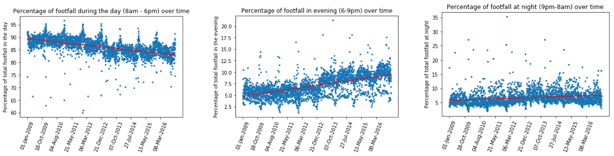
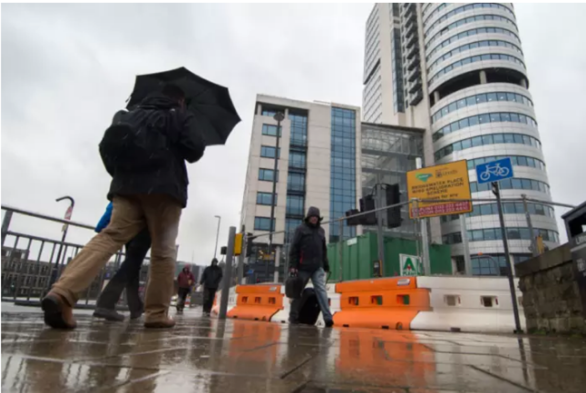
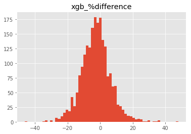

Urban Analytics
Example projects from LIDA
Nick Malleson
School of Geography, University of Leeds &
Leeds Institute for Data Analytics (LIDA)
nickmalleson.co.uk
surf.leeds.ac.uk
These slides: http://surf.leeds.ac.uk/presentations.html
Overview
Urban Analytics - very broad!
Focus on population flows and the ambient population
Background - smart cities, the data deluge and the ambient population
Machine learning approaches
Tracking people (HABITS)
Agent-Based modelling
Data assimiliation
Towards a real-time city simulation ...
Smart cities and the data deluge

Abundance of data about individuals and their environment
"Big data revolution" (Mayer-Schonberger and Cukier, 2013)
"Data deluge" (Kitchin, 2013a)
Smart cities
cities that "are increasingly composed of and monitored by pervasive and ubiquitous computing" (Kitchin, 2013a)
This talk presents some LIDA projecsts that aim to make use of these data
How many people are there in Leicester Square right now?
We need to quantify the ambient population and better understand urban flows:
Crime – how many possible victims?
Pollution – who is being exposed? Where are the hotspots?
Economy – can we attract more people to our city centre?
Health - can we encourage more active travel?
Modelling Footfall with Machine Learning
Aim: to better understand footfall in Leeds city centre, using computer models and footfall camera data
Methods
Data analysis & visualisation
Machine learning
Ouctomes
Analysis of changes in footfall patterns over time
A model of footfall, able to quantify the success of events
Indications of most important drivers
Modelling Footfall with ML
Footfall Data
8 cameras installed between 2007 and 2009
Track movement of people through their field of vision
Provide counts of number of passers-by per hour
Cover a relatively small area of the city centre, not good for wider dynamics.

Modelling Footfall with ML
Side note: Temporal Change
Saw an change in proportion of people using the city
Daytime (8am to 6pm) -> Evening (6pm to 9pm)
Night time (9pm to 8am) unchanged
Modelling Footfall with ML
Explatory factors
Bank Holidays
What type of bank holiday?
School and University Holidays
The weather
Mean temperature, wind speed and rainfall
Day of week
Many others (not tested yet...)
Train prices, car parking availability, business openning times, etc.
Modelling Footfall with ML
Machine Learning Methods
Attempted a number of different methods
Mainly neural networks and random forests
Random forest was most accurate
Modelling Footfall with ML
Feature Importance
| Variable | Relative Importance |
|---|---|
| Mean daily temperature | 1142 |
| Mean daily rainfall | 383 |
| Monday | 131 |
| 2013 | 131 |
| Saturday | 130 |
| 2016 | 130 |
| After Trinity opened | 123 |
| Thursday | 122 |
| Tuesday | 116 |
| School holiday | 115 |
Modelling Footfall with ML
Predictive Analytics
| Event | Date | Real Footfall | Prediction | Difference (%) |
|---|---|---|---|---|
| Tour de France | 5-Jul-14 | 346,180 | 217,277 | -37 |
| Trinity Opening | 21-Mar-13 | 279,473 | 187,381 | -33 |
| Xmas lights 2013 | 07-Nov-13 | 193,441 | 153,750 | -21 |
| Xmas lights 2015 | 12-Nov-15 | 175,126 | 160,105 | -9 |
| Light Night | 06-Oct-16 | 225,660 | 198,025 | -12 |
| ??? | 30-Dec-12 | 106,423 | 157,842 | +48 |
| ??? | 12-Apr-16 | 134,808 | 173,734 | +29 |
Modelling Footfall with ML
Conclusion
Still needs some refinement, but otherwise a useful tool
Potential for prospective analysis as well as forecasting
Not useful for more neuanced analysis
How should roads be re-configured to encourage pedestrians?
Where are most visitors coming from?
How have patterns of use in the city changed
For this we need more detail about individual movements...
Improved policy to mitigate pollutant and inacitivy related health burdens through new big data
Aim: Take new 'Track and Trace' (T&T) data generated from mobile phones to support new policies to:
Reduce the disease burden of pollution
Encourage active travel
Lead by the Institute for Transport Studies, in collaboration with Newcastle City Council and funded by the ESRC
A more neuanced measure of population flows?
Go Smarter
Smart-phone app built in collaboration with Newcastle City Council
Tracks peoples' journeys
Rewards for using active / sustainable modes of travel
Aim: Demonstrate how the linking of high-resolution location data and other databases / models can support better policy making
Disease Burden of Pollution
Collaborating with the Newcastle Urban Observatory who are sensing the urban environment
Aim: use T&T data to model urban flows and identify the most seious pollution hotspots.
Data Caveats
T&T data are
High resolution (spatio-temporal)
Abundant
BUT:
How representative of the wider population?
Abundant enough?
Other 'Big' Urban Flow Data
Social Media

Urban Flow Data
Mobile Communications
Large population coverage

Private, unknown methodology, privacy concerns, coarse resolution (?)

Urban Flow Data
Geo-Apps
Smart-phone apps that capture movement / location are becoming ubiquitous
Great potential for understanding (some) urban dynamics
Urban Flow Data
Difficulties
Skewness
Prolific users distort patterns
Representation
Online & public ≠ offline & private
Spatial accuracy
Bias
Participation inequality and the digital divide
Complicated!!
Messy, and "too big for Excel"
Benefits
Volume
Potential for large sub-samples
Velocity
Streaming / regularly updated
Potential for dynamic models
Need to consolidate diverse sources
Solution: Agent-Based Modelling ?
Agent-Based Modelling (ABM)

Autonomous, interacting 'agents'
Model phenomena from the 'bottom-up'
Advantages:
Modelling complexity, non-linearity, emergence
Natural description of a system
Bridge between verbal theories and mathematical models
History of the evolution of the system
ABM Example - Burglary
ABM Problems
1. Computationally Expensive
Not amenable to machine-led calibration
2. Data hungry
Need fine-grained information about individual actions and behaviours
3. Divergent
Usually models represent complex systems
Projections / forecasts quickly diverge from reality
3. Divergence
Complex systems
One-shot calibration
Nonlinear models predict near future well, but diverge over time.

3. Divergence
Drawback with the 'typical' model development process
Waterfall-style approach is common
Calibrate until fitness is reasonable, then make predictions
But we can do better:
Better computers
More (streaming) data
Methodological gap

Dynamic Data Assimilation
Used in meteorology and hydrology to constrain models closer to reality.
Try to improve estimates of the true system state by combining:
Noisy, real-world observations
Model estimates of the system state
Should be more accurate than data / observations in isolation.
Ensemble Kalman Filter - Basic Process
1. Forecast.
Run an ensemble of models (ABMs) forward in time.
Calculate ensemble mean and variance
2. Analysis.
New 'real' data are available
Integrate these data with the model forecasts to create estimate of model parameter(s)
Impact of new observations depends on their accuracy
3. Repeat
Ensemble Kalman Filter - Basic Process

Experiment with an EnFK
Very simple ABM
People walking along a street
Every hour, x people begin at point A
CCTV Cameras at either end count footfall
Some people can leave before they reach the end (bleedout rate)
Aim: Estimate the number of people who will pass camera B

Hypothetical 'Truth' Data
Use the model to first generate a hypothetical reality

(Preliminary) Experimental Results


(Preliminary) Experimental Results
Forecast and analysis are barely distinguishable
Virtual observations are closer to 'truth' than the analysis :-(
This is probably due to the degree of randomness in the model
EnKF estimates the model parameter (bleedout rate) accurately :-)
XXXX
XXXX
Conclusion and Outlook
XXXX
Future: a holistic city model, estimating the current state and predicting future states.
References
Bond, R., and Kanaan, A. (2015) MassDOT Real Time Traffic Management System. In Planning Support Systems and Smart Cities, S. Geertman, J. Ferreira, R. Goodspeed, and J. Stillwell, Eds. Springer International Publishing, pp. 471–488.
Kitchin, R. (2013a). Big data and human geography Opportunities, challenges and risks. Dialogues in Human Geography, 3(3):262–267.
Kitchin, R. (2013b). The Real-Time City? Big Data and Smart Urbanism. SSRN Electronic Journal.
Mayer-Schonberger, V. and Cukier, K. (2013). Big Data: A Revolution That Will Transform How We Live, Work and Think. John Murray, London, UK
Ward, Jonathan A., Andrew J. Evans, and Nicolas S. Malleson. 2016. Dynamic Calibration of Agent-Based Models Using Data Assimilation. Open Science 3 (4). doi:10.1098/rsos.150703.
Simulation as the Catalyst for Geographical Data Science and Urban Policy Making
Nick Malleson & Alison Heppenstall
Thanks: Alice Tapper, Jon Ward, Andy Evans
nickmalleson.co.uk
surf.leeds.ac.uk
These slides: http://surf.leeds.ac.uk/presentations.html
Ongoing work:
Ward, Jonathan A., Andrew J. Evans, and Nicolas S. Malleson (2016) Dynamic Calibration of Agent-Based Models Using Data Assimilation. Open Science 3 (4). doi:10.1098/rsos.150703.